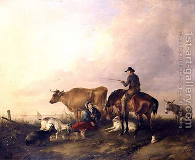

Bava Metzia 95 - Deriving Borrower's Law With an "A Fortiori" Argument
The passage of the borrower imposes liability for a broken limb and natural death - which are unavoidable mishaps. It is silent, however, about theft and loss, which are avoidable mishaps.
We can derive it ourselves with an a fortiori argument : if a paid custodian, who is exempted from liability when the animal suffers a broken limb or dies, is nonetheless liable in cases of theft and loss, is it not logical that a borrower, who is indeed liable in cases of the animal suffering a broken limb or dying, is also liable in cases of theft and loss? Surely this is so.